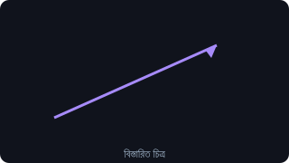

আমরা যে সংখ্যাটি নিয়ে আলোচনা করব তা এক মিলিয়নের চেয়েও অনেক বড়—প্রায় $8\times10^{53}$। প্রথমে মনে হতে পারে এটি ইচ্ছামাত্রিক বাছাই, কিন্তু এই সংখ্যার পেছনে রয়েছে গণিতের এক গভীর ও অদ্ভুত সত্য।
এই বিশাল সংখ্যাটি হলো মনস্টার নামক একটি গ্রুপের আকার। কিন্তু মনস্টার কী, তা বোঝার আগে আমাদের কিছুটা পেছনে যেতে হবে—গ্রুপ তত্ত্বের মূল ধারণাগুলোর দিকে।
গ্রুপ তত্ত্বের কাজ হলো প্রতিসাম্যের ধারণাকে আনুষ্ঠানিকভাবে ধরা। যখন আমরা বলি কোনো মুখ প্রতিসম, তখন বোঝাই—একে কোনো রেখা বরাবর উল্টালেও সেটি আগের মতোই দেখায়। অর্থাৎ এটি একটি কাজ বা ক্রিয়া সম্পর্কে কথা বলছে।
তুষারকণা আরও অনেকভাবে প্রতিসম—আপনি ৬০°, ১২০° ঘোরাতে পারেন, অথবা বিভিন্ন অক্ষ বরাবর উল্টাতে পারেন; প্রতিটি কাজের পরেই এটি আগের মতোই দেখায়।
এই ধরনের সব কাজের সমষ্টিকেই আমরা 'গ্রুপ' বলি। কিছু না করা কাজটিও সবসময় গ্রুপের অংশ ধরা হয়। তুষারকণার ক্ষেত্রে এই ১২টি কাজ নিয়ে গড়ে ওঠা গ্রুপটির নাম $D_6$।
মুখের মতো সরল প্রতিসাম্যের গ্রুপটির নাম $C_2$। সাধারণভাবে গ্রুপের এক বিশাল 'প্রাণীশালা' রয়েছে—প্রতিটি নামই ভিন্ন ভিন্ন প্রতিসাম্যের ধরন বর্ণনা করে।
যেকোনো বস্তুর ক্ষেত্রে আমরা কোনো গঠন অক্ষত রেখে কাজগুলোর কথা ভাবি। ঘনককে ২৪ভাবে ঘোরালে সেটি আগের মতোই থাকে—এই ২৪টি কাজ মিলে একটি গ্রুপ।
যদি প্রতিফলনের অনুমতি দেওয়া হয়, অর্থাৎ অভিমুখ রক্ষা না করা হয়, তবে মোট ৪৮টি কাজ পাওয়া যায়। আবার যদি মুখগুলোকে আলগা ভেবে সরানো ও ঘোরানো যায়, তবে $(8^6)(6!)$ টি কাজের একটি বড় গ্রুপ পাই।
সবচেয়ে আলগা কাঠামো হলো—বিন্দুগুলোর যেকোনো বিন্যাস, অর্থাৎ যেকোনো permutation কে প্রতিসাম্য ধরা। ৬টি বিন্দুর ক্ষেত্রে $6!=720$ টি কাজ। ১০১টি বিন্দুর permutation group-এর আকার $101!\approx9.43\times10^{159}$—অবজার্ভেবল ইউনিভার্সের প্রতিটি পরমাণুর ভেতরে একটা করে ইউনিভার্স থাকলে যতটি সাব-অ্যাটম হতো, প্রায় ততটি!
এখন প্রশ্ন—কোনো কিছুকে গ্রুপ বলা যাবে কীভাবে ঠিক করব? প্রথমে লাগবে একটি সেট: যেকোনো জিনিসের সংগ্রহ, যেমন পূর্ণসংখ্যা, permutation, অথবা কোনো জ্যামিতিক বস্তুর প্রতিসাম্য কাজ।
১. আবদ্ধতা (Closure): দুটি উপাদানের ফলাফলও গ্রুপের ভেতরেই থাকবে। ২. সহযোগিতা (Associativity): $(ab)c=a(bc)$—গ্রুপিং বদলালে ফল বদলায় না। ৩. একত্ব (Identity): 'কিছু না করা' উপাদানটি থাকবে। ৪. বিপরীত (Inverse): প্রতিটি উপাদানের একটি বিপরীত থাকবে, যার সাথে গুণ করলে একত্ব পাওয়া যায়।
তুষারকণার ৬০° ঘোরানোকে তিনবার প্রয়োগ করলে ১৮০° ঘোরানো পাই। অপারেশন বাইনারি হওয়ায় একবারে দুটিকে নিতে হয়; সহযোগিতার স্বত্ব বলে কোন দুটিকে আগে নিই তা ফল বদলায় না: $(r_{60}\circ r_{60})\circ r_{60}=r_{60}\circ(r_{60}\circ r_{60})=r_{180}$।
বর্গক্ষেত্রের প্রতিসাম্যের পূর্ণ $8\times8$ গুণন সারণি আছে। উপরের সারির কাজের পর বাঁ কলামের কাজ প্রয়োগ করলে যে ঘরে পৌঁছাই, সেটিই তাদের গুণফল।
ঘোরানো $r$ এবং $x$-অক্ষ বরাবর প্রতিফলন $s$ দিয়ে বর্গের গ্রুপ বর্ণনা করা যায়। কাজগুলো ডান থেকে বাঁয়ে পড়া হয়, তাই আগে ঘোরে পরে উল্টালে লেখা হয় $sr$।
তুষারকণা ও ষড়ভুজের প্রতিসাম্য একই গ্রুপ $D_6$—দুটির একই কাজ সংরক্ষিত হয়। কিন্তু একটি কম স্পষ্ট উদাহরণ: ঘনকের ঘূর্ণন ও ৪টি বস্তুর permutation গ্রুপ প্রথমে আলাদা মনে হলেও আসলে একই—তাদের গুণন সারণি অভিন্ন।
ঘনকের ৮টি কোণের দূরত্ব ও অভিমুখ রক্ষা করা আর ৪টি বিন্দুর ওপর সম্পূর্ণ স্বাধীন কাজ—এই দুইয়ের মধ্যে একে-একি মিল রয়েছে, যা composition সংরক্ষণ করে। একে বলা হয় আইসোমরফিজম।
দুটি গ্রুপ আইসোমরফিক মানে তাদের একই অন্তর্নিহিত গঠন; এক সম্পর্কে যা বলা যায় তা অপরের ক্ষেত্রেও সত্য। গ্রুপ কোনো এক বস্তুর প্রতিসাম্য নয়, বরং প্রতিসাম্যের একটি বিমূর্ত রূপ—ঠিক যেমন '৩' কোনো নির্দিষ্ট ত্রয়ী নয়, সব ত্রয়ীরই সারাংশ।
আইসোমরফিজম বোঝার পর একটা স্বাভাবিক প্রশ্ন ওঠে—বিশ্বে কতগুলো গ্রুপ আছে? অবশ্যই 'আইসোমরফিজম পর্যন্ত'। আসলে কতভাবে কিছু প্রতিসম হতে পারে, সেটাই জানতে চাওয়া।
অসংখ্য গ্রুপ আছে, আবার অনেক সসীম গ্রুপও। পূর্ণসংখ্যার মৌলিক উৎপাদক বা অণুর পরমাণুর মতো অনেক গ্রুপকে ছোট গ্রুপে ভেঙে লেখা যায়। যেগুলো আর ভাঙা যায় না, তাদের বলা হয় সরল গ্রুপ (simple groups)।
১৮টি অসীম পরিবার ছাড়াও ২৬টি এমন সরল গ্রুপ আছে যারা কোনো পরিবারে ফিট করে না—তাদের বলা হয় sporadic। মনস্টার হলো এদের মধ্যে বৃহত্তম; এর আকারই সেই $8\times10^{53}$ সংখ্যা। ১৯টি sporadic গ্রুপ মনস্টারের 'সন্তান', আর বাকি ৬টি 'pariah'।
মনস্টার কোনো ২ বা ৩-মাত্রিক বস্তুর প্রতিসাম্য নয়; এটি ১৯৬,৮৮৩ মাত্রার একটি স্থানে কাজ করে—একটিমাত্র উপাদান বর্ণনা করতে প্রায় ৪ গিগাবাইট তথ্য লাগে!
৭০-এর দশকে জন ম্যাককি লক্ষ করেন ১৯৬,৮৮৩-এর কাছাকাছি এক সংখ্যা মডুলার ফর্মের ধারা বিস্তারে হাজির হয়। এটি 'moonshine' নামে পরিচিত হয় এবং ১৯৯২ সালে রিচার্ড বোচার্ডস এটি প্রমাণ করেন—গণিতের দুই সম্পূর্ণ আলাদা অংশের অপ্রত্যাশিত সংযোগ।
নিচের চিত্রটি পূর্ণস্ক্রিনে দেখে বিষয়টি আরও ভালোভাবে পর্যবেক্ষণ করুন।
